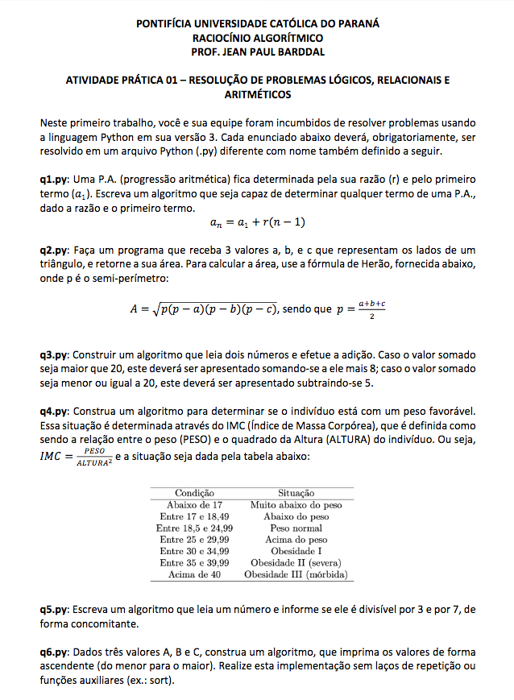
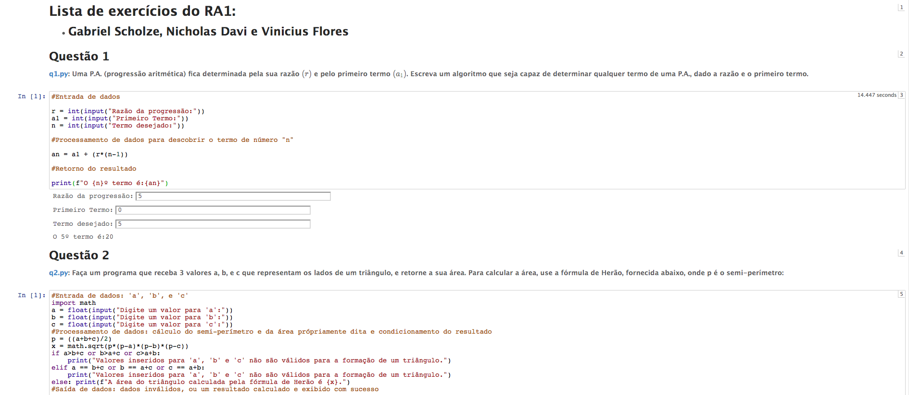
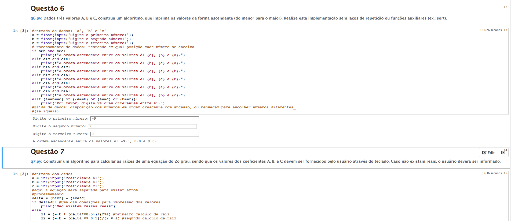
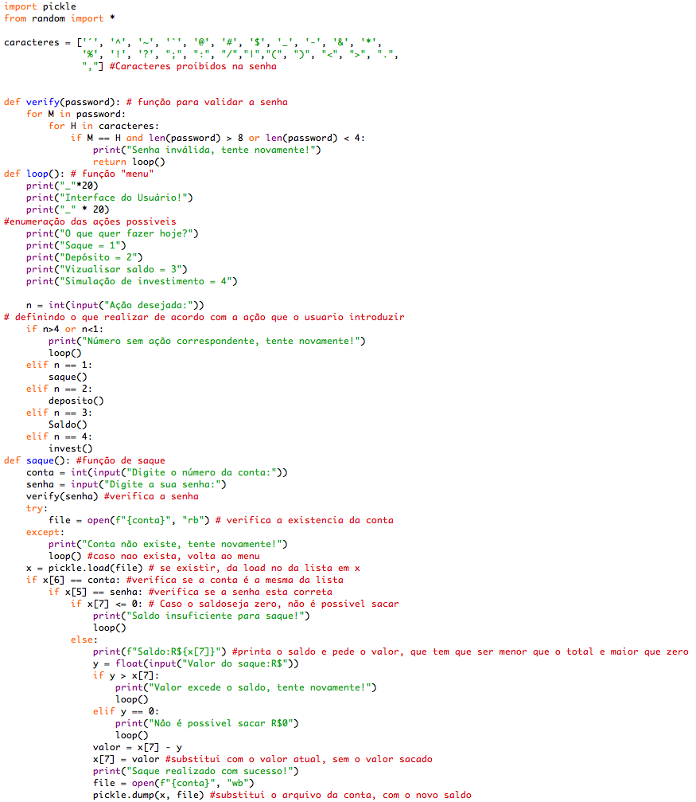
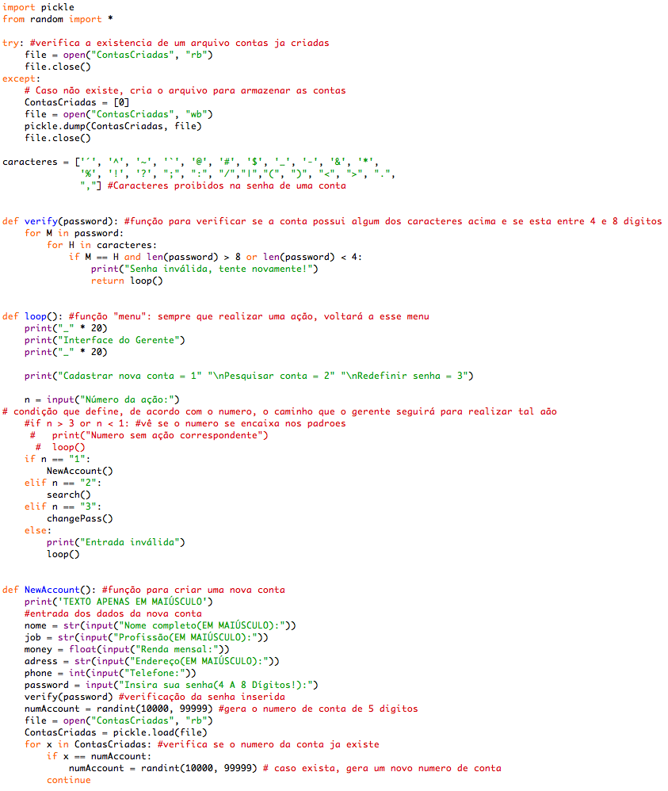
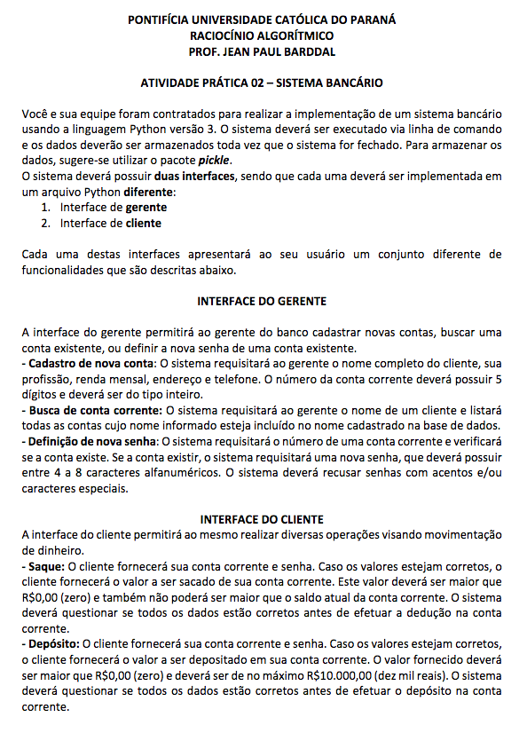
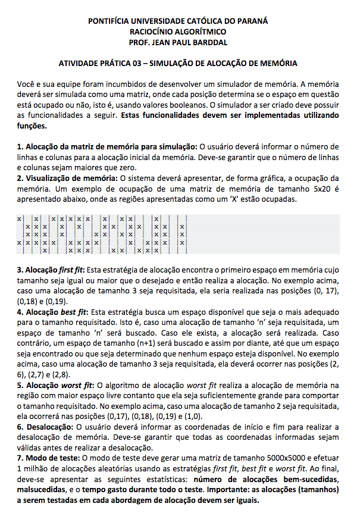
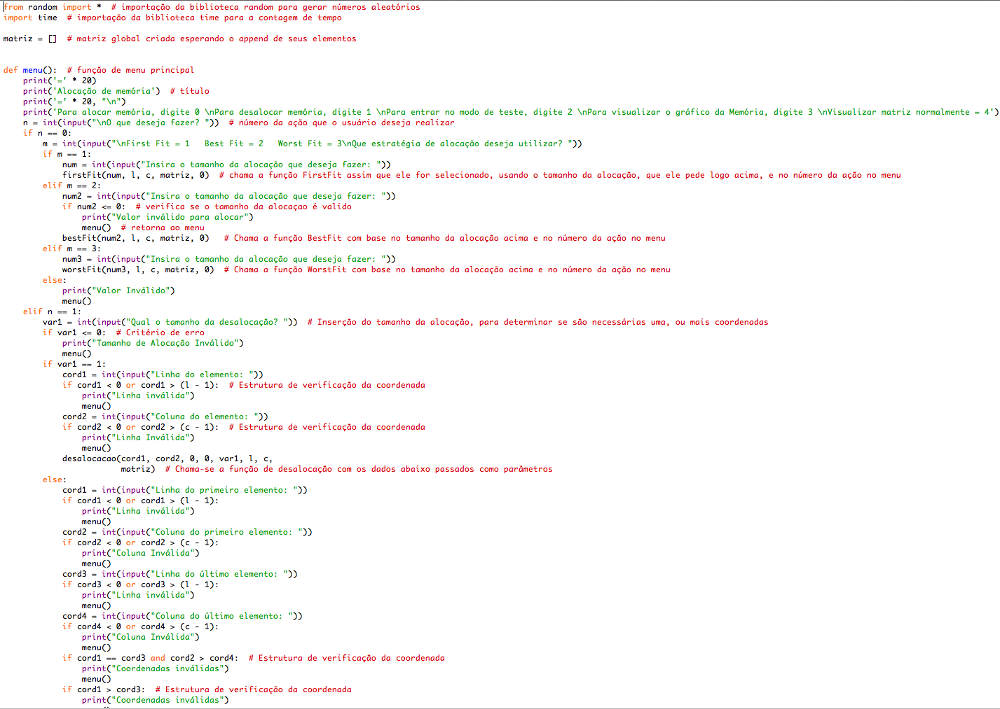
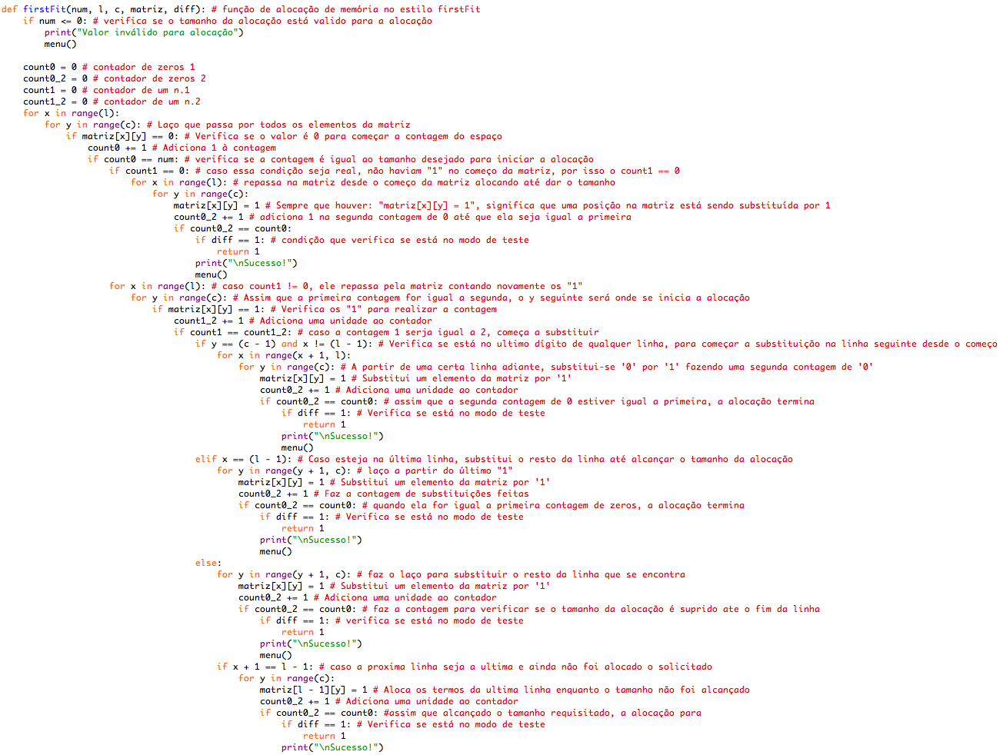

Voltar para o menu Principal
Raciocínio Algorítmico
-
Trabalho Discente Efetivo 1
Neste primeiro trabalho, nós desenvolvemos habilidades, treinamos e exercitamos
o raciocínio algorítmico através de resolução de problemas em grupo.
-

-

-

-
Trabalho Discente Efetivo 2
Neste segundo trabalho, nós desenvolvemos um sistema bancário, com
uma interface de gerente, e uma de usuário, fizemos isso armazenando
dados em disco com o serializador Pickle. Com o mesmo grupo de anteriormente.
-

-

-

-
Trabalho Discente Efetivo 3
Neste terceiro trabalho, nós desenvolvemos um sistema de alocação de memória.
Simulamos por meio de listas uma matriz que armazenava diversos tamanhos de alocação
usando estratégias de alocação como: FirstFit, BestFit e WorstFit. Com o mesmo
grupo de anteriormente.
-

-

-

Voltar para o menu Principal